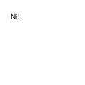

font
font(fontname, fontsize=None)
Sets the current font. The first parameter is the valid name of a font installed on the system. The valid name is the name as it appears in the Font Book application as "Postscript Name". The second parameter is optional and specifies the font size, in the same way as when calling the fontsize() command. All text() commands following the font() command will be drawn in this font.
 |
font("Helvetica")
text("Ni!", 10, 10) |
the name of the current font